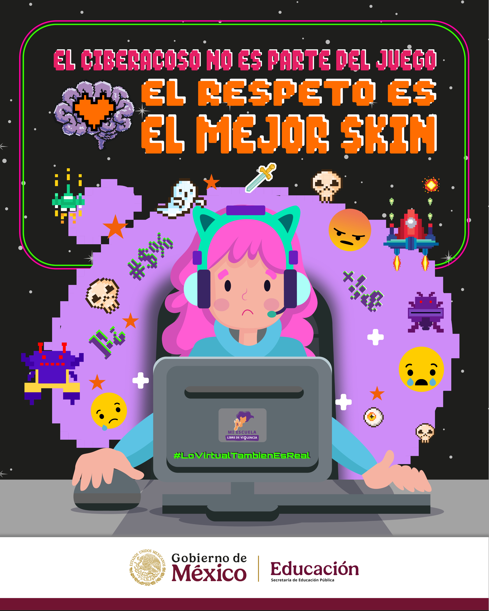
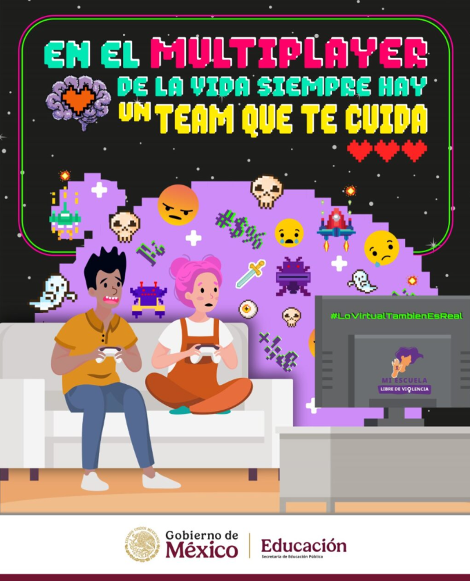
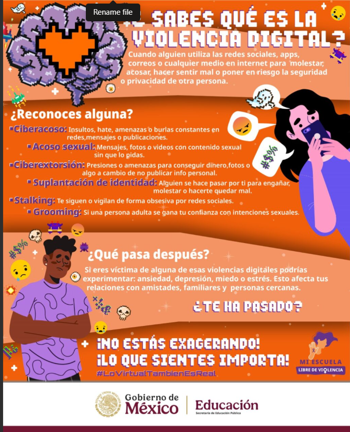

Lo virtual también es real

"Lo virtual tambien es real" es una campaña que responde a las necesidades de la Educación Media Superior de prevenir las violencias digitales y ciberacoso qué viven las y los estudiantes".
Materiales para difusión y
consulta



Descargar
materiales